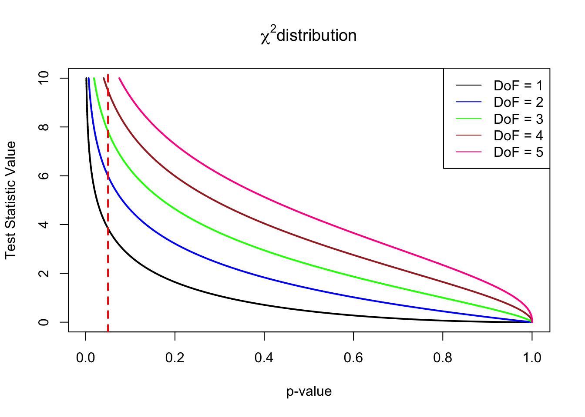

A test of HWE using permutations (to be completed)
R
Chi square
Permutation
Statistics
An example with microsatellite data and R
Author
Giuliano Colosimo
Published
November 21, 2023
Introduction
Working with microsatellite genotypes data for many years I always wanted to fully understand how to build a test to verify whether the population(s) under analysis is(are) in Hardy-Weinberg (HW) equilibrium (Hardy, 1908) (or, to be more precise, if the population’s genotypes reflects HW proportions). Checking for HW proportions is generally the first step in any kind of population genetic analysis (Waples et al., 2018).
One of the most basic approach to perform such a test is to use the \(\chi^{2}\) method (Allendorf et al., 2022). This approach is particularly useful when the number of loci and alleles is too big to perform a Fisher’s Exact Test (Fisher, 1935). The straight up formula of the \(\chi^{2}\) test is relatively simple: \(\chi^{2} = \sum\frac{(OBSERVED-EXPECTED)^2}{EXPECTED}\), where OBSERVED and EXPECTED refer to the number of observed and expected genotypes for each locus and allele. The \(\chi^{2}\) value obtained is then compared to a set of values obtained under the assumption of no violation of the \(H_0\).
Show the R code used to produce the graph
chiTestVal <-seq(0, 10, by =0.001)plot(1-pchisq(chiTestVal, df =1), chiTestVal, type ="l",main =expression(chi^2*"distribution"),ylab ="Test Statistic Value",xlab ="p-value", lwd =2)lines(1-pchisq(chiTestVal, df =2), chiTestVal, type ="l",lwd =2, col ="blue")lines(1-pchisq(chiTestVal, df =3), chiTestVal, type ="l",lwd =2, col ="green")lines(1-pchisq(chiTestVal, df =4), chiTestVal, type ="l",lwd =2, col ="brown")lines(1-pchisq(chiTestVal, df =5), chiTestVal, type ="l",lwd =2, col ="deeppink")abline(v=0.05, col ="red", lty =2, lwd =2)legend("topright", legend =c("DoF = 1", "DoF = 2", "DoF = 3", "DoF = 4", "DoF = 5"), col =c("black", "blue", "green", "brown", "deeppink"), lty =1)

Figure 1: \(\chi^{2}\) distribution graph showing the test statistic on the y axis and its associated p-value on the x axis. The test statistic is calculated with different Degrees of Freedom (DoF). The red dashed line marks the widely used threshold of p-value = 0.05 under which we can reject \(H_0\). As DoF increases, the test statistic value needed to reject \(H_0\) gets higher.
While the \(\chi^{2}\) test is applied in many different situations, there are some cases, for example when there are many genotypes with low expected numbers due the presence of many different alleles, where a different approach may serve us better in testing \(H_0\): permutation tests (Allendorf et al., 2022).
The overall idea behind this approach is to recreate X number of randomized datasets starting from the observed data. For each generated dataset a \(\chi^{2}\) value is then calculated and compared with the value obtained from the original dataset. The prorportion of randomized dataset that produce a \(\chi^{2}\) value as large as or lager than the observed data give us an unbiased estimate of the probability of rejecting \(H_0\)(Allendorf et al., 2022).
In this post I will show how I build a permutation test procedure to evaluate the probability if rejecting \(H_0\) when working with microsatellite genotypes. I will be using a microsatellite dataset available from Dryad (click here to download). The dataset is borrowed from Chan et al. (2020) and consists of 27 microsatellites typed in 237 individuals. The original dataset is available in genpop format. This is a widely used format in R applications. The procedure illustrated here works directly with matrices. Therefore in this first part of the post I will cover the step-by-step procedure to transition from genpop to matrix .
Data wrangling
First thing to do is to load the data file using the following code:
library(adegenet) # package to loadsceloporus_data <-read.genepop("path/to/file.gen", # specify the path to the genepop filencode =3, # how many digits are used for allelesquiet = T) # print loading progress on screen
The read.genepop() function from adegenet(Jombart, 2008) automatically converts the data in to a genind object, the data format used by adegenet. We can take a look at what it is like just by typing the name of data.
sceloporus_data
/// GENIND OBJECT /////////
// 237 individuals; 27 loci; 442 alleles; size: 499.2 Kb
// Basic content
@tab: 237 x 442 matrix of allele counts
@loc.n.all: number of alleles per locus (range: 3-35)
@loc.fac: locus factor for the 442 columns of @tab
@all.names: list of allele names for each locus
@ploidy: ploidy of each individual (range: 2-2)
@type: codom
@call: read.genepop(file = "~/Documents/websites/EvolvoErgoSum/data/doi_10.5061_dryad.sxksn0316__v2/microsatellite_genotypes.gen",
ncode = 3, quiet = T)
// Optional content
@pop: population of each individual (group size range: 6-76)
This data format is quite useful as it gives a first glance of what is that we are dealing with. Unfortunately this is not the format needed to perform this custom test so we first need to transform the data a bit. In fact this permutation procedure takes as input file a matrix of genotypes. Rather than giving you an example right now I think is best if we proceed and transform the dataset so that you can see how the input file should look like. The first step is to transform the data object in a data frame.
By inspecting the first 10 individuals and 9 loci we notice that the function has nicely organized our individuals in rows, kept the population information in the first column, and used the other columns for the genotypes. This format is very close to what we need, but not quite yet. First, we change the coding scheme of missing genotypes:
Waples, R.S., Rus Hoelzel, A., Gaggiotti, O., Tiedemann, R., Palsbøll, P.J., Cipriano, F., et al. 2018. Guidelines for genetic data analysis. Journal of Cetacean Research and Management, 18: 33–80.